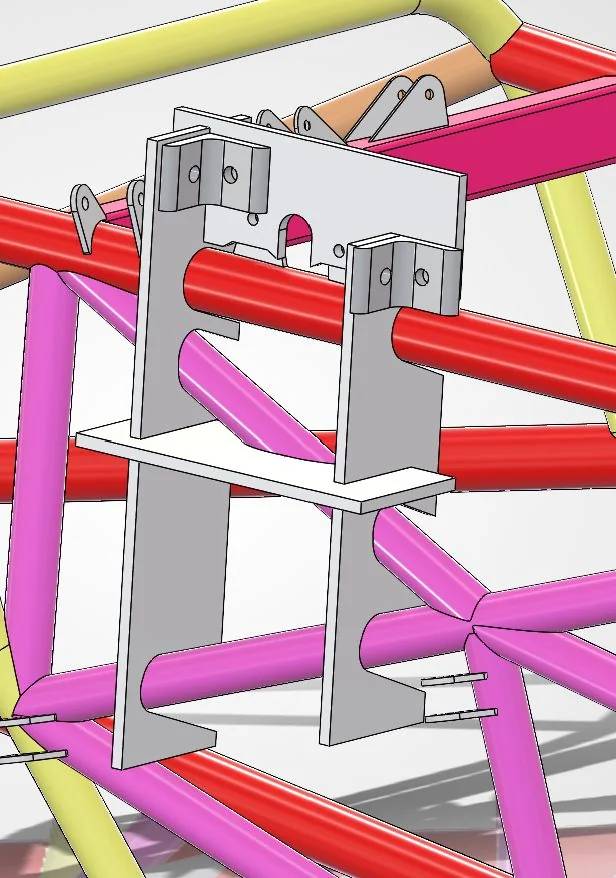
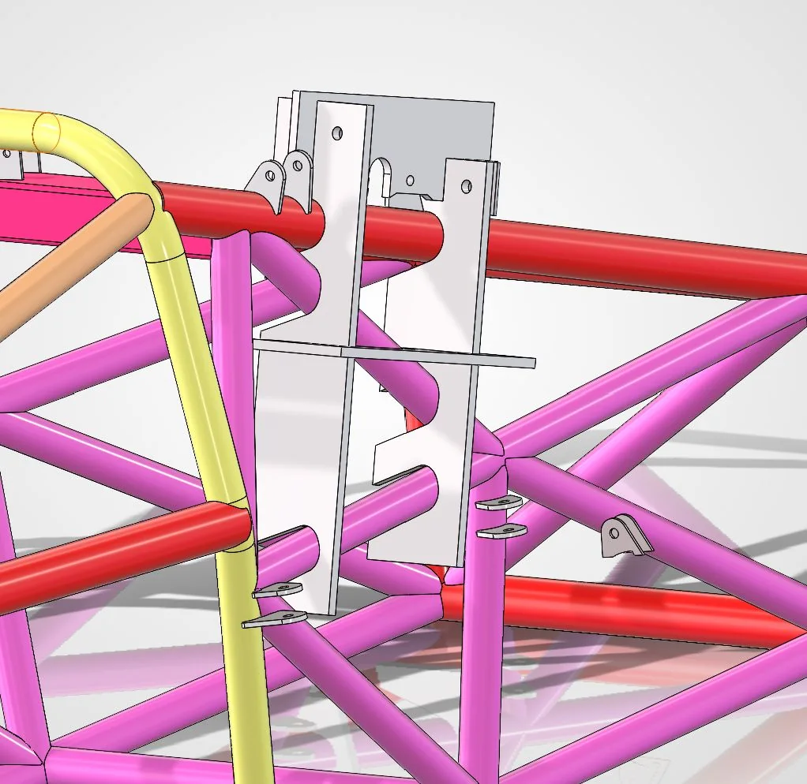
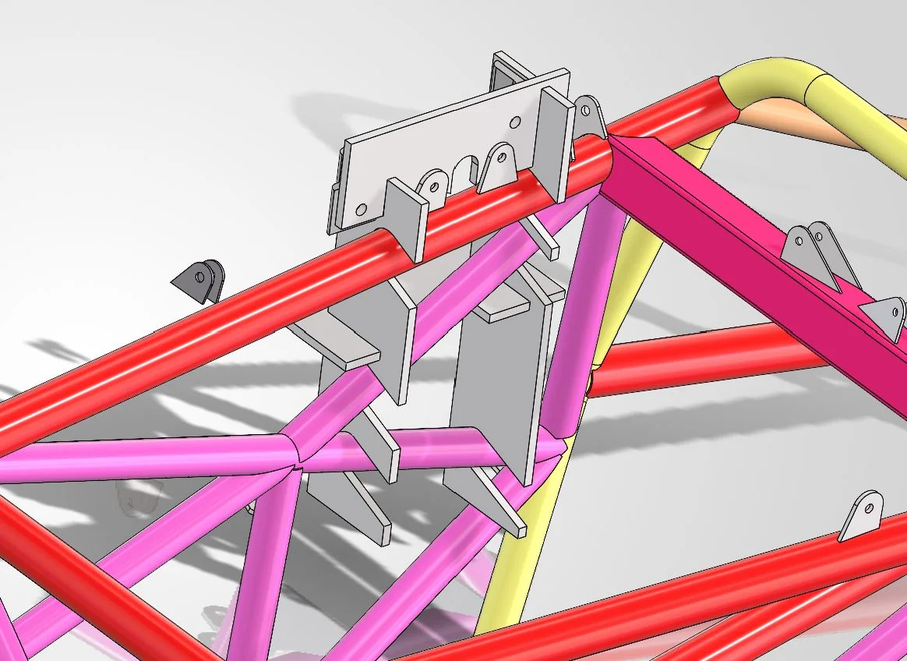

Front Anti Roll Bar Welding Jig
a laser cut fixture that holds the front anti roll bar tabs in place while they are welded to the REV12 frame
- project
- 05 of 08
- team
- Penn Electric Racing, suspension
- credit
- Designed by me in SolidWorks as part of the REV12 jig set, then laser cut from MDF.
01the problem
- the front anti roll bar mounts to tabs welded on the front of the frame
- their position and angle set where the bar sits, so they have to match CAD closely
- measuring and holding small tabs by hand on round tubes is slow and easy to get wrong
- a jig holds every tab in place at once, so the welder only has to weld
02designing off the frame
- modeled in SolidWorks directly on top of the REV12 frame CAD
- two upright plates with notches sized to the frame tubes, so the jig finds its position from the frame itself
- a top plate with slots that hold the anti roll bar tabs at their CAD position and angle
- a cross plate ties the uprights together so the jig stays square


03making it
- every piece is a flat plate, so the whole jig cuts from sheet stock on a laser cutter
- cut from MDF, which is cheap, fast to cut and easy to remake if anything changes

04results
- tab locations come from the frame and the CAD, not a tape measure
- one fixture places every front anti roll bar tab at once
- cheap enough to cut again for the next frame